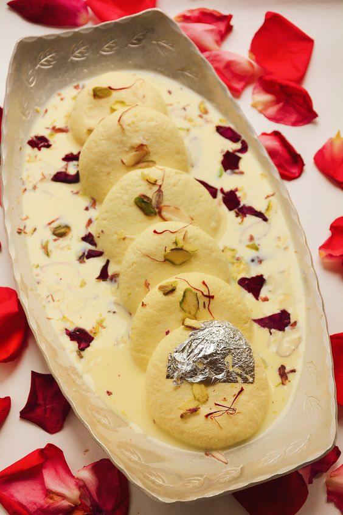

Rasmalai is a Bengali delicacy made with spongy cottage cheese balls dunked into aromatic milk syrup known as ‘Ras’. It is one of the best Indian sweet dessert.

Ingredients
For rasgulla sponges:
5 cups full fat milk
2 to 3 tbsp lemon juice, add as required
1 cups sugar
5 cups water
2 teaspoon semolina or 1 teaspoon cornflour
½ tsp cardamom powder (elaichi powder)
For Ras (Milk Syrup):
750 ml/3 cup Full fat milk
7- 8 Green Cardamom, peeled and pounded
½ Teaspoon Kewra essence /rose water
2 Generous pinches Saffron/Kesar
A few blanched almonds
Sugar to taste
A few Pistachios, finely chopped
Silver leaf to garnish
Method
Place a heavy bottom deep pot on medium flame. Now add 3 cups milk to pot and boil. Bring the milk to a boil.
Add saffron, pounded green cardamom and blanched almonds. Simmer the milk on low heat. Stir every 2 to 3 minutes to prevent boiling. Add sugar to taste and simmer until the milk reduces to half the quantity. switch off the flame. Set this aside to cool.
Boil milk in a heavy bottom pan. Once it comes to a boil, switch off the flame.
start adding lemon juice till milk curdles.
Using a strainer drain the water and collect the chena. Rinse it under tap water so that there's no trace of lemon juice in it. Leave it in the strainer for 10-15 minutes and then take the chena in your hand and squeeze out remaining water slowly.
knead constantly for 10 minutes using your palm. Once it’s smooth, make small balls out of it.
Heat 1 cup sugar and 4 cups water in a wide pan and wait till it comes to a full boil.
Drop the balls in boiling sugar syrup and cook for 15-17 minutes. The balls will double in size by then.
Transfer the balls to thickened milk. Chill in the refrigerator overnight or for 5-6 hours. Garnish with chopped pistachios and few saffron strands before serving.